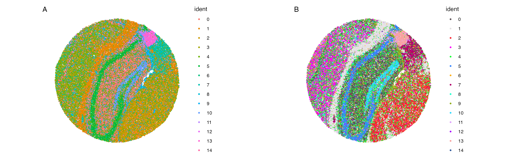

Plotting #5: Spatial Plotting Functions
Compiled: August 26, 2025
Source:vignettes/articles/Spatial_Plotting.Rmd
Spatial_Plotting.RmdCustomizing Plots for Enhanced/Simplified Visualization in Spatial Analyses
While the default plots from Seurat and other packages are often very good they are often modified from their original outputs after plotting. scCustomize seeks to simplify this process and enhance some of the default visualizations.
For this tutorial, I will be utilizing two spatial datasets to illustrate scCustomize functions (both are part of SeuratData package).
library(ggplot2)
library(dplyr)
library(magrittr)
library(patchwork)
library(viridis)
library(Seurat)
library(scCustomize)
library(qs)
# Load stxBrain Visium dataset and Slide-seq V2 ssHippo dataset
mouse_ctx <- SeuratData::LoadData("stxBrain", type = "anterior1")
slide.seq <- SeuratData::LoadData("ssHippo")In order to be compatible with this vignette we will follow Seurat vignette processing of this data.
# Visium
mouse_ctx <- SCTransform(mouse_ctx, assay = "Spatial", verbose = FALSE)
mouse_ctx <- RunPCA(mouse_ctx, assay = "SCT", verbose = FALSE)
mouse_ctx <- FindNeighbors(mouse_ctx, reduction = "pca", dims = 1:30)
mouse_ctx <- FindClusters(mouse_ctx, verbose = FALSE)
mouse_ctx <- RunUMAP(mouse_ctx, reduction = "pca", dims = 1:30)
# Slide-seq
slide.seq <- SCTransform(slide.seq, assay = "Spatial", ncells = 3000, verbose = FALSE)
slide.seq <- RunPCA(slide.seq)
slide.seq <- RunUMAP(slide.seq, dims = 1:30)
slide.seq <- FindNeighbors(slide.seq, dims = 1:30)
slide.seq <- FindClusters(slide.seq, resolution = 0.3, verbose = FALSE)Spatial DimPlots
Currently, spatial support in scCustomize is limited to one plotting
function SpatialDimPlot. scCustomize provides a matching
scCustomize version of the function:
SpatialDimPlot_scCustom to align these plots with
scCustomize style and colors.
NOTE: If you are interested in further spatial functionality within
scCustomize please post issue to GitHub or directly submit PR, as future
implementations will be based on user demand.
The issue with the default SpatialDimPlot are similar to
those affecting the regular DimPlot. Namely that the
default color scheme can make it very difficult to tell spot colors from
each other. SpatialDimPlot_scCustom() solves these
issues.

A. Default plotting results in colors that are very
similar between clusters making it hard to differentiate between them on
the image. B. Default plot using scCustomize
SpatialDimPlot_scCustom solves this issues matching color
scheme to scCustomize package defaults.
